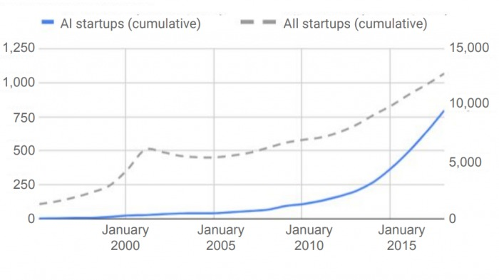
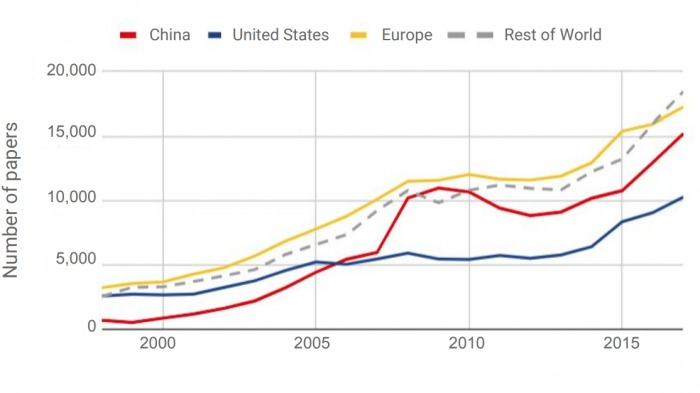
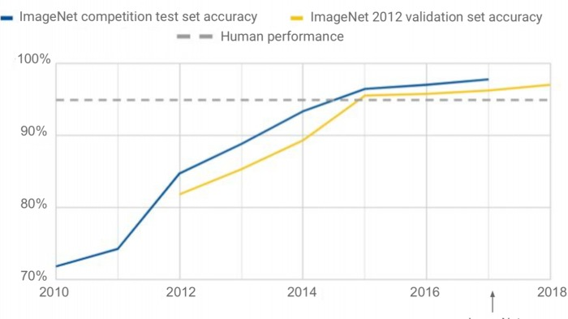
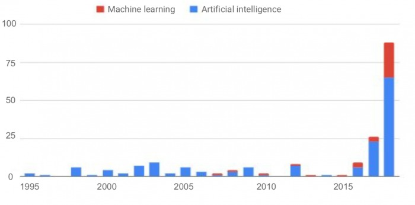

Growing of AI
1. AI is being commercialized at a dizzying pace
The amount of money being poured into AI startups is remarkable. The number of AI startups (top) is shown on the left, compared with total startups on the right. AI investment (below) is shown on the left, compared with total investments on the right. This speaks to huge opportunities to use machine learning in different industries, but also to a market that is hyped and overheated.
2. The focal points are China and the US, but also Europe
Much has been made of China’s rising AI prowess (see “China’s AI awakening”) and its growing rivalry with the US. As the data shows, Europe is also a huge hub of AI activity. But it seems that three main centers of power are emerging.
3. The state of the art is improving fast.
Much has been made of China’s rising AI prowess (see “China’s AI awakening”) and its growing rivalry with the US. As the data shows, Europe is also a huge hub of AI activity. But it seems that three main centers of power are emerging.
4.Artificial intelligence is a political issue
Mentions of artificial intelligence and machine learning in the US Congress (above) and the UK Parliament (below) have exploded in the past few years. This reflects a growing awareness of the technology’s economic and strategic importance (see “Canada and France propose an international panel on AI”).
Top 3 Companies in the AI Software Primary Market and the 3 AI Software Platforms Functional Markets, 1H 2020 (ranking based on worldwide revenues)
| AI Software Market | AI Type | #1 | #2 | #3 |
|---|---|---|---|---|
| AI Software Platforms | AI Centric | IBM | Microsoft | SAS Institute |
| AI Applications | AI Centric | IBM | OpenText | Slack |
| AI non-Centric | Microsoft | Intuit | AI System Infrastructure Software | AI Centric | IBM | Microsoft | Dynatrace |
| AI non-Centric | Microsoft | VMware | McAfee | AI Application Development & Deployment | AI Centric | Microsoft | Palantir |
| AI non-Centric | Microsoft | ESRI | Teradata |
The AI Services category grew slower than the overall AI market with 13% annual revenue growth in 2020. However, it is forecast to grow 17.4% year over year in 2021, outperforming the overall AI market by approximately 1%. Its five-year CAGR is expected to be 18.4% with revenues reaching $37.9 billion by 2024. This technology category breaks down into two market segments: IT Services and Business Services. IT Services is the larger of the two, accounting for nearly 80% of all AI Services revenues. From a growth perspective, IT Services for AI tends to grow faster than Business Services for AI except for 2024, where Business Services for AI is forecast to perform slightly higher than both IT Services for AI and the overall AI Services market. "Though the pandemic interrupted the momentum of worldwide AI services market growth, enterprise demand for AI capabilities to support business resiliency and augment human productivity sustained double-digit expansion in 2020, even as other discretionary projects experienced delays," said Jennifer Hamel, research manager, Analytics and Intelligent Automation Services. "Client demand for technical expertise to develop, implement, and manage AI applications drives IT services expansion, while increasing adoption of AI-enabled automation within business processes boosts spending on business services." The latest release of the AI Tracker covers a total of 160 vendor companies in the AI Services market. Under IT Services for AI, the Top 3 companies in 1H 2020 were IBM, Accenture, and Infosys. These were the only companies to bring in more than $500 million in IT Services for AI revenues and their combined share of the market was 28%. Beyond the Top 3, 13 other companies generated more than $100 million each during the same period. In the Business Services for AI market, there were only four companies – Ernst & Young, PwC, Deloitte, and Booz Allen Hamilton – that generated revenues of more than $100 million in 1H 2020. Overall, the competitive landscape in both services markets for AI is a highly fragmented one where players from across the services value chain continue to invest in technology assets, innovation resources, and expertise in applying AI to solve industry- and domain-specific problems for clients.